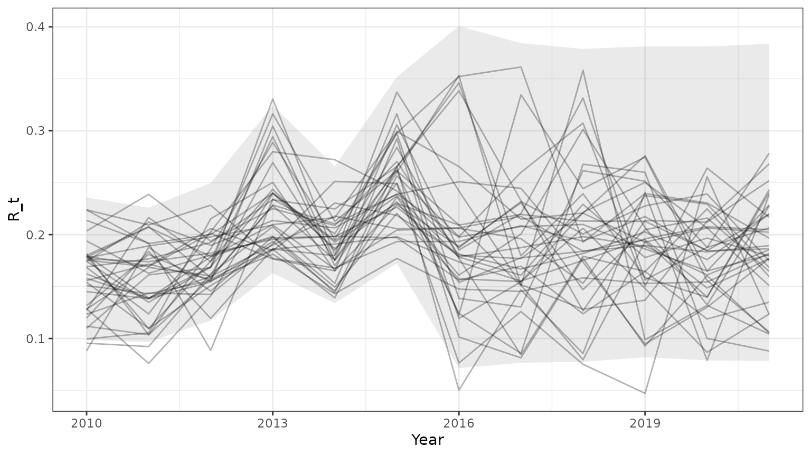
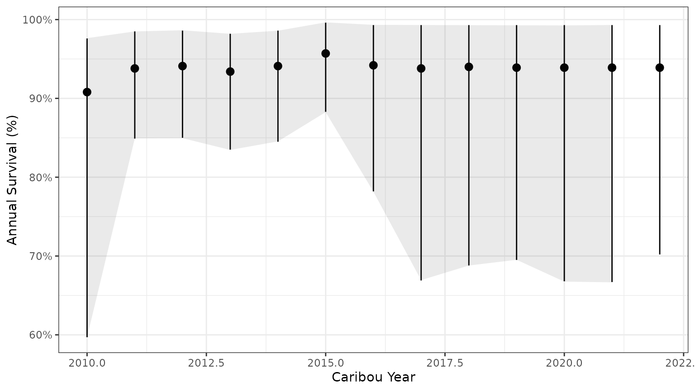

Options for using Bayesian model results
Source:vignettes/bayesian-model-outputs.Rmd
bayesian-model-outputs.Rmd
library(caribouMetrics)
#> Loading required package: nimble
#> nimble version 1.3.0 is loaded.
#> For more information on NIMBLE and a User Manual,
#> please visit https://R-nimble.org.
#>
#> Note for advanced users who have written their own MCMC samplers:
#> As of version 0.13.0, NIMBLE's protocol for handling posterior
#> predictive nodes has changed in a way that could affect user-defined
#> samplers in some situations. Please see Section 15.5.1 of the User Manual.
#>
#> Attaching package: 'nimble'
#> The following object is masked from 'package:stats':
#>
#> simulate
#> The following object is masked from 'package:base':
#>
#> declare
# use local version on local and installed on GH
if(requireNamespace("devtools", quietly = TRUE)) devtools::load_all()
library(bboudata)
library(bboutools)
library(dplyr)
#>
#> Attaching package: 'dplyr'
#> The following objects are masked from 'package:stats':
#>
#> filter, lag
#> The following objects are masked from 'package:base':
#>
#> intersect, setdiff, setequal, union
library(ggplot2)
resFile <- here::here("results/vignetteBbbouExample.rds")
useSaved <- F #option to skip slow step of fitting bboutools modelDemographic trajectories and summaries from bboutools models
bbouMakeSummaryTable() returns fitted bboutools survival
and recruitment models (assuming no trends over time) and summaries of
those models. In this example, we add 5 missing years that will be
predicted by the model.
if(useSaved&file.exists(resFile)){
mod <- readRDS(resFile)
}else{
surv_data = bboudata::bbousurv_a %>% filter(Year > 2010)
surv_data_add = expand.grid(Year=seq(2017,2022),Month=seq(1:12),PopulationName=unique(surv_data$PopulationName))
surv_data=merge(surv_data,surv_data_add,all.x=T,all.y=T)
surv_data$StartTotal[is.na(surv_data$StartTotal)]=1
recruit_data=bboudata::bbourecruit_a %>% filter(Year > 2010)
recruit_data_add = expand.grid(Year=seq(2017,2022),PopulationName=unique(recruit_data$PopulationName))
recruit_data=merge(recruit_data,recruit_data_add,all.x=T,all.y=T)
recruit_data$Month[is.na(recruit_data$Month)]=3;recruit_data$Day[is.na(recruit_data$Day)]=15
mod <- bbouMakeSummaryTable(surv_data,
recruit_data,
N0=NA,return_mcmc=T)
if(dir.exists(dirname(resFile))){
saveRDS(mod,resFile)
}
}
#> Registered S3 method overwritten by 'mcmcr':
#> method from
#> as.mcmc.nlists nlist
#> warning: value of stochastic node FemaleYearlings[7]: value is NA or NaN even after trying to simulate.
#> warning: problem initializing stochastic node FemaleYearlings[7]: logProb is NA or NaN.
#> warning: value of stochastic node FemaleYearlings[8]: value is NA or NaN even after trying to simulate.
#> warning: problem initializing stochastic node FemaleYearlings[8]: logProb is NA or NaN.
#> warning: value of stochastic node FemaleYearlings[9]: value is NA or NaN even after trying to simulate.
#> warning: problem initializing stochastic node FemaleYearlings[9]: logProb is NA or NaN.
#> warning: value of stochastic node FemaleYearlings[10]: value is NA or NaN even after trying to simulate.
#> warning: problem initializing stochastic node FemaleYearlings[10]: logProb is NA or NaN.
#> warning: value of stochastic node FemaleYearlings[11]: value is NA or NaN even after trying to simulate.
#> warning: problem initializing stochastic node FemaleYearlings[11]: logProb is NA or NaN.
#> warning: value of stochastic node FemaleYearlings[12]: value is NA or NaN even after trying to simulate.
#> warning: problem initializing stochastic node FemaleYearlings[12]: logProb is NA or NaN.
#> warning: value of stochastic node Cows[7]: value is NA or NaN even after trying to simulate.
#> warning: problem initializing stochastic node Cows[7]: logProb is NA or NaN.
#> warning: value of stochastic node Cows[8]: value is NA or NaN even after trying to simulate.
#> warning: problem initializing stochastic node Cows[8]: logProb is NA or NaN.
#> warning: value of stochastic node Cows[9]: value is NA or NaN even after trying to simulate.
#> warning: problem initializing stochastic node Cows[9]: logProb is NA or NaN.
#> warning: value of stochastic node Cows[10]: value is NA or NaN even after trying to simulate.
#> warning: problem initializing stochastic node Cows[10]: logProb is NA or NaN.
#> warning: value of stochastic node Cows[11]: value is NA or NaN even after trying to simulate.
#> warning: problem initializing stochastic node Cows[11]: logProb is NA or NaN.
#> warning: value of stochastic node Cows[12]: value is NA or NaN even after trying to simulate.
#> warning: problem initializing stochastic node Cows[12]: logProb is NA or NaN.
#> warning: value of stochastic node OtherAdultsFemales[7]: value is NA or NaN even after trying to simulate.
#> warning: problem initializing stochastic node OtherAdultsFemales[7]: logProb is NA or NaN.
#> warning: value of stochastic node OtherAdultsFemales[8]: value is NA or NaN even after trying to simulate.
#> warning: problem initializing stochastic node OtherAdultsFemales[8]: logProb is NA or NaN.
#> warning: value of stochastic node OtherAdultsFemales[9]: value is NA or NaN even after trying to simulate.
#> warning: problem initializing stochastic node OtherAdultsFemales[9]: logProb is NA or NaN.
#> warning: value of stochastic node OtherAdultsFemales[10]: value is NA or NaN even after trying to simulate.
#> warning: problem initializing stochastic node OtherAdultsFemales[10]: logProb is NA or NaN.
#> warning: value of stochastic node OtherAdultsFemales[11]: value is NA or NaN even after trying to simulate.
#> warning: problem initializing stochastic node OtherAdultsFemales[11]: logProb is NA or NaN.
#> warning: value of stochastic node OtherAdultsFemales[12]: value is NA or NaN even after trying to simulate.
#> warning: problem initializing stochastic node OtherAdultsFemales[12]: logProb is NA or NaN.
#> warning: value of deterministic node AdultsFemales[7]: value is NA or NaN even after trying to calculate.
#> warning: value of deterministic node AdultsFemales[8]: value is NA or NaN even after trying to calculate.
#> warning: value of deterministic node AdultsFemales[9]: value is NA or NaN even after trying to calculate.
#> warning: value of deterministic node AdultsFemales[10]: value is NA or NaN even after trying to calculate.
#> warning: value of deterministic node AdultsFemales[11]: value is NA or NaN even after trying to calculate.
#> warning: value of deterministic node AdultsFemales[12]: value is NA or NaN even after trying to calculate.
#> warning: value of stochastic node Calves[7]: value is NA or NaN even after trying to simulate.
#> warning: problem initializing stochastic node Calves[7]: logProb is NA or NaN.
#> warning: value of stochastic node Calves[8]: value is NA or NaN even after trying to simulate.
#> warning: problem initializing stochastic node Calves[8]: logProb is NA or NaN.
#> warning: value of stochastic node Calves[9]: value is NA or NaN even after trying to simulate.
#> warning: problem initializing stochastic node Calves[9]: logProb is NA or NaN.
#> warning: value of stochastic node Calves[10]: value is NA or NaN even after trying to simulate.
#> warning: problem initializing stochastic node Calves[10]: logProb is NA or NaN.
#> warning: value of stochastic node Calves[11]: value is NA or NaN even after trying to simulate.
#> warning: problem initializing stochastic node Calves[11]: logProb is NA or NaN.
#> warning: value of stochastic node Calves[12]: value is NA or NaN even after trying to simulate.
#> warning: problem initializing stochastic node Calves[12]: logProb is NA or NaN.
#> warning: value of stochastic node FemaleYearlings[7]: value is NA or NaN even after trying to simulate.
#> warning: problem initializing stochastic node FemaleYearlings[7]: logProb is NA or NaN.
#> warning: value of stochastic node FemaleYearlings[8]: value is NA or NaN even after trying to simulate.
#> warning: problem initializing stochastic node FemaleYearlings[8]: logProb is NA or NaN.
#> warning: value of stochastic node FemaleYearlings[9]: value is NA or NaN even after trying to simulate.
#> warning: problem initializing stochastic node FemaleYearlings[9]: logProb is NA or NaN.
#> warning: value of stochastic node FemaleYearlings[10]: value is NA or NaN even after trying to simulate.
#> warning: problem initializing stochastic node FemaleYearlings[10]: logProb is NA or NaN.
#> warning: value of stochastic node FemaleYearlings[11]: value is NA or NaN even after trying to simulate.
#> warning: problem initializing stochastic node FemaleYearlings[11]: logProb is NA or NaN.
#> warning: value of stochastic node FemaleYearlings[12]: value is NA or NaN even after trying to simulate.
#> warning: problem initializing stochastic node FemaleYearlings[12]: logProb is NA or NaN.
#> warning: value of stochastic node Cows[7]: value is NA or NaN even after trying to simulate.
#> warning: problem initializing stochastic node Cows[7]: logProb is NA or NaN.
#> warning: value of stochastic node Cows[8]: value is NA or NaN even after trying to simulate.
#> warning: problem initializing stochastic node Cows[8]: logProb is NA or NaN.
#> warning: value of stochastic node Cows[9]: value is NA or NaN even after trying to simulate.
#> warning: problem initializing stochastic node Cows[9]: logProb is NA or NaN.
#> warning: value of stochastic node Cows[10]: value is NA or NaN even after trying to simulate.
#> warning: problem initializing stochastic node Cows[10]: logProb is NA or NaN.
#> warning: value of stochastic node Cows[11]: value is NA or NaN even after trying to simulate.
#> warning: problem initializing stochastic node Cows[11]: logProb is NA or NaN.
#> warning: value of stochastic node Cows[12]: value is NA or NaN even after trying to simulate.
#> warning: problem initializing stochastic node Cows[12]: logProb is NA or NaN.
#> warning: value of stochastic node OtherAdultsFemales[7]: value is NA or NaN even after trying to simulate.
#> warning: problem initializing stochastic node OtherAdultsFemales[7]: logProb is NA or NaN.
#> warning: value of stochastic node OtherAdultsFemales[8]: value is NA or NaN even after trying to simulate.
#> warning: problem initializing stochastic node OtherAdultsFemales[8]: logProb is NA or NaN.
#> warning: value of stochastic node OtherAdultsFemales[9]: value is NA or NaN even after trying to simulate.
#> warning: problem initializing stochastic node OtherAdultsFemales[9]: logProb is NA or NaN.
#> warning: value of stochastic node OtherAdultsFemales[10]: value is NA or NaN even after trying to simulate.
#> warning: problem initializing stochastic node OtherAdultsFemales[10]: logProb is NA or NaN.
#> warning: value of stochastic node OtherAdultsFemales[11]: value is NA or NaN even after trying to simulate.
#> warning: problem initializing stochastic node OtherAdultsFemales[11]: logProb is NA or NaN.
#> warning: value of stochastic node OtherAdultsFemales[12]: value is NA or NaN even after trying to simulate.
#> warning: problem initializing stochastic node OtherAdultsFemales[12]: logProb is NA or NaN.
#> warning: value of deterministic node AdultsFemales[7]: value is NA or NaN even after trying to calculate.
#> warning: value of deterministic node AdultsFemales[8]: value is NA or NaN even after trying to calculate.
#> warning: value of deterministic node AdultsFemales[9]: value is NA or NaN even after trying to calculate.
#> warning: value of deterministic node AdultsFemales[10]: value is NA or NaN even after trying to calculate.
#> warning: value of deterministic node AdultsFemales[11]: value is NA or NaN even after trying to calculate.
#> warning: value of deterministic node AdultsFemales[12]: value is NA or NaN even after trying to calculate.
#> warning: value of stochastic node Calves[7]: value is NA or NaN even after trying to simulate.
#> warning: problem initializing stochastic node Calves[7]: logProb is NA or NaN.
#> warning: value of stochastic node Calves[8]: value is NA or NaN even after trying to simulate.
#> warning: problem initializing stochastic node Calves[8]: logProb is NA or NaN.
#> warning: value of stochastic node Calves[9]: value is NA or NaN even after trying to simulate.
#> warning: problem initializing stochastic node Calves[9]: logProb is NA or NaN.
#> warning: value of stochastic node Calves[10]: value is NA or NaN even after trying to simulate.
#> warning: problem initializing stochastic node Calves[10]: logProb is NA or NaN.
#> warning: value of stochastic node Calves[11]: value is NA or NaN even after trying to simulate.
#> warning: problem initializing stochastic node Calves[11]: logProb is NA or NaN.
#> warning: value of stochastic node Calves[12]: value is NA or NaN even after trying to simulate.
#> warning: problem initializing stochastic node Calves[12]: logProb is NA or NaN.
#> warning: value of stochastic node FemaleYearlings[7]: value is NA or NaN even after trying to simulate.
#> warning: problem initializing stochastic node FemaleYearlings[7]: logProb is NA or NaN.
#> warning: value of stochastic node FemaleYearlings[8]: value is NA or NaN even after trying to simulate.
#> warning: problem initializing stochastic node FemaleYearlings[8]: logProb is NA or NaN.
#> warning: value of stochastic node FemaleYearlings[9]: value is NA or NaN even after trying to simulate.
#> warning: problem initializing stochastic node FemaleYearlings[9]: logProb is NA or NaN.
#> warning: value of stochastic node FemaleYearlings[10]: value is NA or NaN even after trying to simulate.
#> warning: problem initializing stochastic node FemaleYearlings[10]: logProb is NA or NaN.
#> warning: value of stochastic node FemaleYearlings[11]: value is NA or NaN even after trying to simulate.
#> warning: problem initializing stochastic node FemaleYearlings[11]: logProb is NA or NaN.
#> warning: value of stochastic node FemaleYearlings[12]: value is NA or NaN even after trying to simulate.
#> warning: problem initializing stochastic node FemaleYearlings[12]: logProb is NA or NaN.
#> warning: value of stochastic node Cows[7]: value is NA or NaN even after trying to simulate.
#> warning: problem initializing stochastic node Cows[7]: logProb is NA or NaN.
#> warning: value of stochastic node Cows[8]: value is NA or NaN even after trying to simulate.
#> warning: problem initializing stochastic node Cows[8]: logProb is NA or NaN.
#> warning: value of stochastic node Cows[9]: value is NA or NaN even after trying to simulate.
#> warning: problem initializing stochastic node Cows[9]: logProb is NA or NaN.
#> warning: value of stochastic node Cows[10]: value is NA or NaN even after trying to simulate.
#> warning: problem initializing stochastic node Cows[10]: logProb is NA or NaN.
#> warning: value of stochastic node Cows[11]: value is NA or NaN even after trying to simulate.
#> warning: problem initializing stochastic node Cows[11]: logProb is NA or NaN.
#> warning: value of stochastic node Cows[12]: value is NA or NaN even after trying to simulate.
#> warning: problem initializing stochastic node Cows[12]: logProb is NA or NaN.
#> warning: value of stochastic node OtherAdultsFemales[7]: value is NA or NaN even after trying to simulate.
#> warning: problem initializing stochastic node OtherAdultsFemales[7]: logProb is NA or NaN.
#> warning: value of stochastic node OtherAdultsFemales[8]: value is NA or NaN even after trying to simulate.
#> warning: problem initializing stochastic node OtherAdultsFemales[8]: logProb is NA or NaN.
#> warning: value of stochastic node OtherAdultsFemales[9]: value is NA or NaN even after trying to simulate.
#> warning: problem initializing stochastic node OtherAdultsFemales[9]: logProb is NA or NaN.
#> warning: value of stochastic node OtherAdultsFemales[10]: value is NA or NaN even after trying to simulate.
#> warning: problem initializing stochastic node OtherAdultsFemales[10]: logProb is NA or NaN.
#> warning: value of stochastic node OtherAdultsFemales[11]: value is NA or NaN even after trying to simulate.
#> warning: problem initializing stochastic node OtherAdultsFemales[11]: logProb is NA or NaN.
#> warning: value of stochastic node OtherAdultsFemales[12]: value is NA or NaN even after trying to simulate.
#> warning: problem initializing stochastic node OtherAdultsFemales[12]: logProb is NA or NaN.
#> warning: value of deterministic node AdultsFemales[7]: value is NA or NaN even after trying to calculate.
#> warning: value of deterministic node AdultsFemales[8]: value is NA or NaN even after trying to calculate.
#> warning: value of deterministic node AdultsFemales[9]: value is NA or NaN even after trying to calculate.
#> warning: value of deterministic node AdultsFemales[10]: value is NA or NaN even after trying to calculate.
#> warning: value of deterministic node AdultsFemales[11]: value is NA or NaN even after trying to calculate.
#> warning: value of deterministic node AdultsFemales[12]: value is NA or NaN even after trying to calculate.
#> warning: value of stochastic node Calves[7]: value is NA or NaN even after trying to simulate.
#> warning: problem initializing stochastic node Calves[7]: logProb is NA or NaN.
#> warning: value of stochastic node Calves[8]: value is NA or NaN even after trying to simulate.
#> warning: problem initializing stochastic node Calves[8]: logProb is NA or NaN.
#> warning: value of stochastic node Calves[9]: value is NA or NaN even after trying to simulate.
#> warning: problem initializing stochastic node Calves[9]: logProb is NA or NaN.
#> warning: value of stochastic node Calves[10]: value is NA or NaN even after trying to simulate.
#> warning: problem initializing stochastic node Calves[10]: logProb is NA or NaN.
#> warning: value of stochastic node Calves[11]: value is NA or NaN even after trying to simulate.
#> warning: problem initializing stochastic node Calves[11]: logProb is NA or NaN.
#> warning: value of stochastic node Calves[12]: value is NA or NaN even after trying to simulate.
#> warning: problem initializing stochastic node Calves[12]: logProb is NA or NaN.
names(mod)
#> [1] "parTab" "surv_fit" "recruit_fit"
mod$parTab
#> pop_name R_bar R_sd R_iv_mean R_iv_shape R_bar_lower R_bar_upper
#> 1 A 0.1927174 0.1974911 0.3554032 1.912094 0.1359539 0.2575156
#> S_bar S_sd S_iv_mean S_iv_shape S_bar_lower S_bar_upper N0
#> 1 0.9415866 0.5854533 0.607396 1.547401 0.8530804 0.9833124 NA
#> nCollarYears nSurvYears nCowsAllYears nRecruitYears
#> 1 185 12 NA 12Use caribouPopSimMCMC() to predict demographic
trajectories from the mcmc samples. Use
summarizeCaribouPopSim() to get 95% prediction intervals
from the demographic trajectories.
outmcmc = caribouPopSimMCMC(popInfo=NA,mod$recruit_fit,mod$surv_fit)
names(outmcmc)
#> [1] "N0" "lambda" "lambdaE"
#> [4] "N" "R_t" "X_t"
#> [7] "S_t" "n_recruits" "surviving_adFemales"
#> [10] "lab" "Year" "PopulationName"
#> [13] "id"
#get 95% prediction intervals from demographic trajectories
PImcmc <- summarizeCaribouPopSim(convertTrajectories(outmcmc))
PImcmc$summary$id=NA
base=ggplot(subset(outmcmc,id<=35),aes(x=Year,y=R_t,group=id))+geom_line(alpha=0.3)+theme_bw()+
geom_ribbon(data=subset(PImcmc$summary,MetricTypeID=="recruitment"),aes(x=Year,y=Mean,ymin=lower,ymax=upper),alpha=0.1)
print(base)
base=ggplot(subset(outmcmc,id<=35),aes(x=Year,y=S_t,group=id))+geom_line(alpha=0.3)+theme_bw()+
geom_ribbon(data=subset(PImcmc$summary,MetricTypeID=="survival"),aes(x=Year,y=Mean,ymin=lower,ymax=upper),alpha=0.1)
print(base)
base=ggplot(subset(outmcmc,id<=35),aes(x=Year,y=lambda,group=id))+geom_line(alpha=0.3)+theme_bw()+
geom_ribbon(data=subset(PImcmc$summary,MetricTypeID=="lambda"),aes(x=Year,y=Mean,ymin=lower,ymax=upper),alpha=0.1)
print(base)Note that the 95% prediction intervals from the mcmc samples match the results returned by bboutools.
bb_plot_year_calf_cow_ratio(mod$recruit_fit)+theme_bw()+geom_ribbon(data=subset(PImcmc$summary,MetricTypeID=="recruitment"),aes(x=Year,y=Mean,ymin=lower,ymax=upper),alpha=0.1)
surv_pred <- bb_predict_survival(mod$surv_fit)
bb_plot_year_survival(surv_pred) + theme_bw() + geom_ribbon(data=subset(PImcmc$summary,MetricTypeID=="survival"),aes(x=Year,y=Mean,ymin=lower,ymax=upper),alpha=0.1)
bbou_lambda <- bb_predict_growth(survival = mod$surv_fit, recruitment = mod$recruit_fit)
bb_plot_year_growth(bbou_lambda)+theme_bw()+geom_ribbon(data=subset(PImcmc$summary,MetricTypeID=="lambda"),aes(x=Year,y=Mean,ymin=lower,ymax=upper),alpha=0.1)The model summary returned by bbouMakeSummaryTable() can
also be used to simulate demographic trajectories.
yrs <- unique(subset(PImcmc$summary,select=c(PopulationName,Year)))
yrs$time <- seq(1:nrow(yrs))
outParTab = doSim(numSteps=nrow(yrs), numPops=10000, N0=NA, R_bar=mod$parTab$R_bar, S_bar=mod$parTab$S_bar,
R_sd=mod$parTab$R_sd, S_sd=mod$parTab$S_sd,
R_iv_mean=mod$parTab$R_iv_mean, S_iv_mean=mod$parTab$S_iv_mean,
R_iv_shape = mod$parTab$R_iv_shape,S_iv_shape=mod$parTab$S_iv_shape,
scn_nm="base", addl_params=NULL,type="logistic")
outParTab = merge(outParTab,yrs)
PIParTab <- summarizeCaribouPopSim(convertTrajectories(subset(outParTab,type=="samp")))
PIParTab$summary$id=NA;PIParTab$summary$scn <- unique(outParTab$scn)
base=ggplot(subset(outParTab,id<=35),aes(x=Year,y=R_t,group=id))+geom_line(alpha=0.3)+theme_bw()+
geom_ribbon(data=subset(PIParTab$summary,MetricTypeID=="recruitment"),aes(x=Year,y=Mean,ymin=lower,ymax=upper),alpha=0.1)
print(base)
base=ggplot(subset(outParTab,id<=35),aes(x=Year,y=S_t,group=id))+geom_line(alpha=0.3)+theme_bw()+
geom_ribbon(data=subset(PIParTab$summary,MetricTypeID=="survival"),aes(x=Year,y=Mean,ymin=lower,ymax=upper),alpha=0.1)
print(base)
base=ggplot(subset(outParTab,id<=35),aes(x=Year,y=lambda,group=id))+geom_line(alpha=0.3)+theme_bw()+
geom_ribbon(data=subset(PIParTab$summary,MetricTypeID=="lambda"),aes(x=Year,y=Mean,ymin=lower,ymax=upper),alpha=0.1)
print(base)Note that the 95% prediction intervals derived from the model summary only match the results returned by bboutools in unobserved years. This is because year-specific information is not included in the model summary.
bb_plot_year_calf_cow_ratio(mod$recruit_fit)+theme_bw()+geom_ribbon(data=subset(PIParTab$summary,MetricTypeID=="recruitment"),aes(x=Year,y=Mean,ymin=lower,ymax=upper),alpha=0.1)
surv_pred <- bb_predict_survival(mod$surv_fit)
bb_plot_year_survival(surv_pred) + theme_bw() + geom_ribbon(data=subset(PIParTab$summary,MetricTypeID=="survival"),aes(x=Year,y=Mean,ymin=lower,ymax=upper),alpha=0.1)
bbou_lambda <- bb_predict_growth(survival = mod$surv_fit, recruitment = mod$recruit_fit)
bb_plot_year_growth(bbou_lambda)+theme_bw()+geom_ribbon(data=subset(PIParTab$summary,MetricTypeID=="lambda"),aes(x=Year,y=Mean,ymin=lower,ymax=upper),alpha=0.1)Scenarios informed by bboutools models
We can explore the implications of changing demographic model parameters by modifying the model summary table. In this example, we increase the expected calf:cow ratio by 30%. The Boreal Demographic Projection Explorer app provides an R Shiny interface for fitting bboutools models and exploring scenarios informed by those models, with more thorough explanations.
parTabHighRec <- mod$parTab
parTabHighRec$R_bar <- parTabHighRec$R_bar*1.3
outParTabHR = doSim(numSteps=nrow(yrs), numPops=10000, N0=NA, R_bar=parTabHighRec$R_bar, S_bar=parTabHighRec$S_bar,
R_sd=parTabHighRec$R_sd, S_sd=parTabHighRec$S_sd,
R_iv_mean=parTabHighRec$R_iv_mean, S_iv_mean=parTabHighRec$S_iv_mean,
R_iv_shape = parTabHighRec$R_iv_shape,S_iv_shape=parTabHighRec$S_iv_shape,
scn_nm="highRec", addl_params=NULL,type="logistic")
outParTabHR = merge(outParTabHR,yrs)
PIParTabHR <- summarizeCaribouPopSim(convertTrajectories(subset(outParTabHR,type=="samp")))
PIParTabHR$summary$id=NA;PIParTabHR$summary$scn <- unique(outParTabHR$scn)
comp <- rbind(PIParTab$summary,PIParTabHR$summary)
comp <- subset(comp,!is.na(Mean))
base=ggplot(comp,aes(x=Year,y=Mean,ymin=lower, ymax=upper, group=scn,colour=scn,fill=scn))+
geom_line(alpha=0.3)+geom_ribbon(alpha=0.1)+theme_bw()+facet_wrap(~Parameter)
print(base)Other demographic modeling options and outputs
TO DO: show & discuss expected values of parameters - without interannual variation.
TO DO: show effects of other demographic modeling options & outputs i.e. changes in population size with and without carrying capacity.
TO DO: Add lots more text and explanation of what the functions are for, what the different rates are and why you would want to calculate them one way vs another. As well as general context within the package and relative to bboutools.